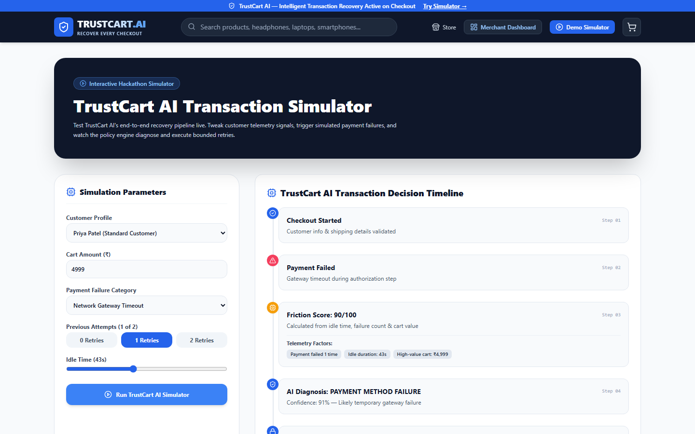

TRUSTCART AI
RECOVERY ENGINE.
An AI-assisted e-commerce checkout recovery platform that observes live behavioral telemetry, scores 0–100 checkout friction, diagnoses root payment failure causes with evidence, and enforces bounded recovery rules with immutable audit logging.

TURNING CHECKOUT FAILURES INTO SAFE RECOVERIES.
When digital checkouts fail due to gateway drops or bank declines, blind retry loops risk double charges. TrustCart AI pairs deterministic feature extraction with explainable policy guardrails.
Indian E-Commerce Storefront
Complete Next.js 14 App Router storefront covering Home, Product Catalog, Details, Cart, and Checkout flows.
12+ Telemetry Signals
Captures checkout failures, session duration, idle time, field validation errors, cart value, and retry timing.
0–100 Friction Scoring
Computes transparent checkout friction across LOW, MEDIUM, HIGH, and CRITICAL tiers with explicit factor breakdowns.
XAI Root-Cause Diagnosis
Classifies PAYMENT_METHOD_FAILURE, NETWORK_FAILURE, BANK_DECLINE, and VALIDATION_ERROR with confidence scores and evidence lists.
Bounded Policy Engine
Hard-enforces MAX_RETRIES = 2 and double-charge state machine prevention while surfacing a transparent Recovery Modal.
Razorpay HMAC & Audit Trail
Verifies server-side Razorpay signatures + event_id webhook idempotency and logs every decision step to /merchant/audit-logs.
HOW IT WORKS.
Frontend telemetry streams to FastAPI routers, evaluates payment state machines in SQLAlchemy, and updates Merchant BI.
Telemetry
12+ checkout & idle signals captured.
Friction Score
0–100 risk index with factor weights.
XAI Diagnosis
Evidence-backed root failure reason.
Bounded Policy
MAX_RETRIES = 2 & double-charge lock.
Verified Audit
Razorpay HMAC + /merchant/audit-logs.
APPLICATION SCREENSHOTS.
Live screens captured from the running application. Click any image to view full size, or follow setup instructions in the GitHub repository.
PAYMENT SAFETY & EXPLAINABILITY ARCHITECTURE.
Key modules, rules, safety checks, and automated test results documented in the repository.
| Component | Mechanism | Guarantee |
|---|---|---|
| Webhook Security | Raw-body HMAC SHA256 + event_id table | Idempotent duplicate webhook defense |
| Policy Guardrails | State machine + MAX_RETRIES = 2 lock | Zero accidental double charges |
| Merchant Analytics | /merchant Recharts funnels & KPIs | Database-backed recovery metrics |
| Demo Sandbox | Interactive /demo telemetry simulator | Live step-by-step decision replay |
CORE TECHNOLOGIES.
Frameworks, databases, visualization tools, and testing libraries used in TrustCart AI.
FUTURE ENHANCEMENTS.
Upcoming improvements planned for TrustCart AI.
EXPLORE SOURCE & DOCS.
View the complete codebase, sample datasets, quick-launch scripts, and automated test suites on GitHub.